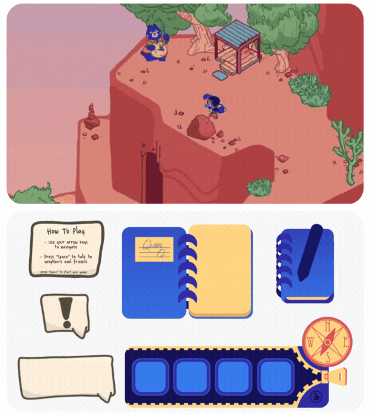
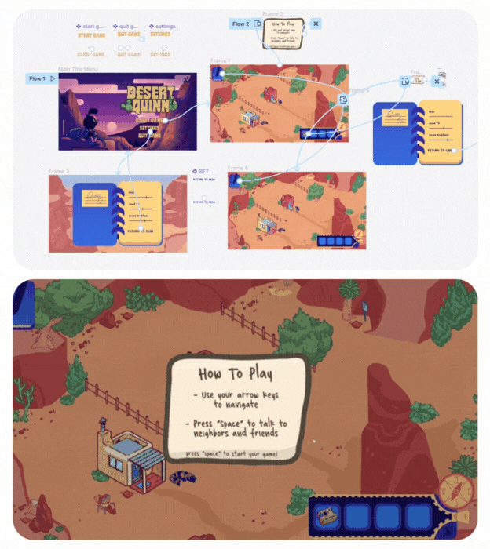
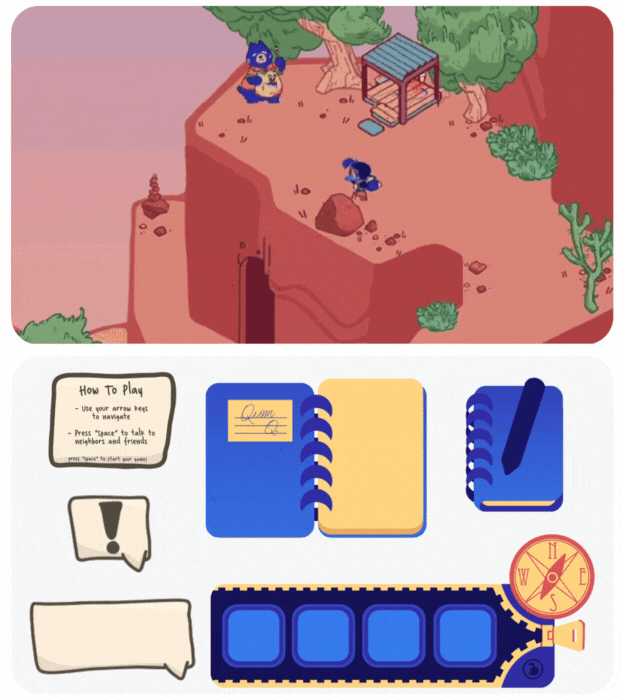
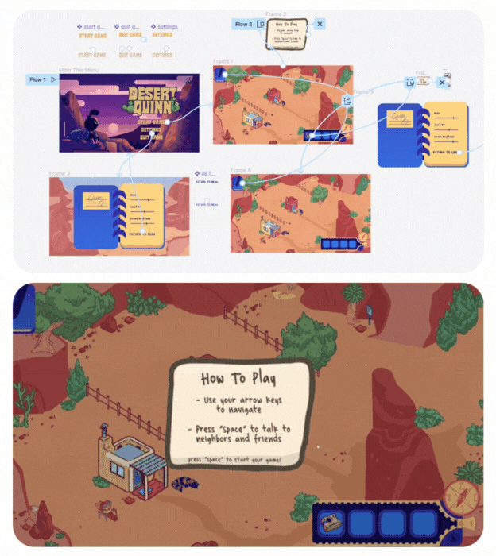

Graphic Design
He sank back beneath the water. It took three more underwater renditions of the egg's song before Harry had it memorized; then he trod water for a while, thinking hard, while Myrtle sat and watched him. "I've got to go and look for people who can't use their voices above the ground. . . ." he said slowly. "Er . . . who could that be?" "Slow, aren't you?" He had never seen Moaning Myrtle so cheerful, apart from the day when a dose of PolyJuice Potion had given Hermione the hairy face and tail of a cat. Harry stared around the bathroom, thinking ... if the voices could only be heard underwater, then it made sense for them to belong to underwater creatures. He ran this theory past Myrtle, who smirked at him. "Well, thats what Diggory thought," she said. "He lay there talking to himself for ages about it. Ages and ages . . . nearly all the bubbles had gone. ...".


 


